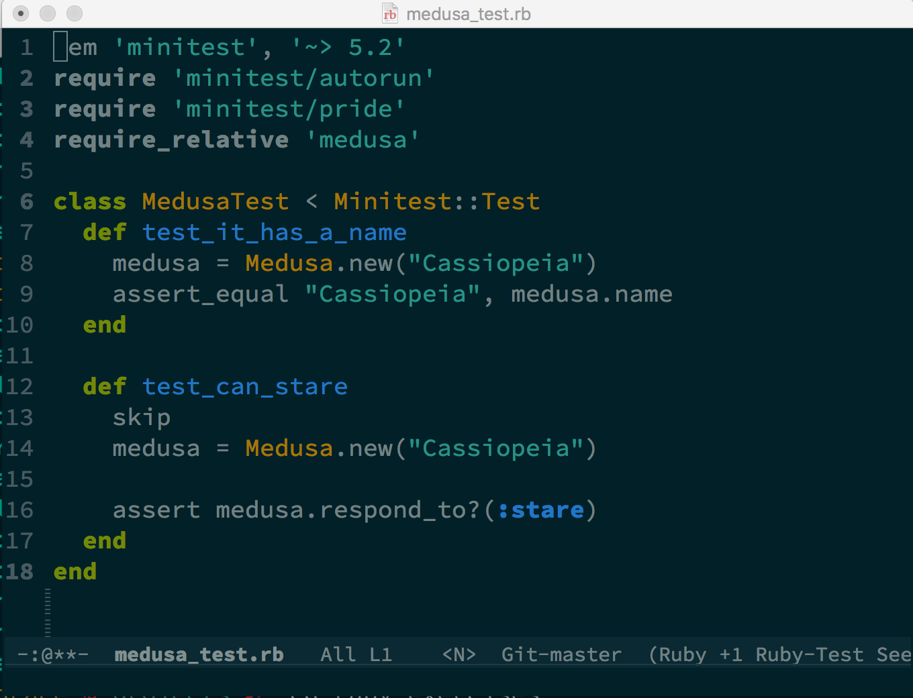
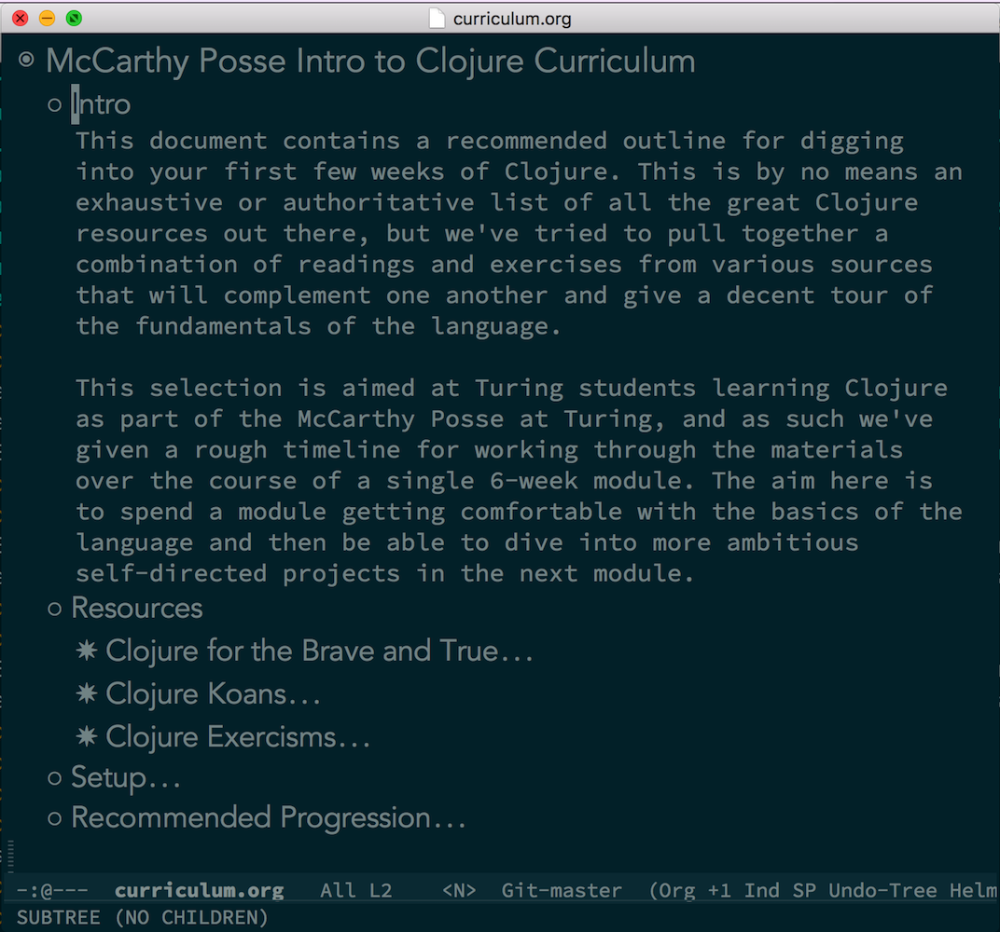
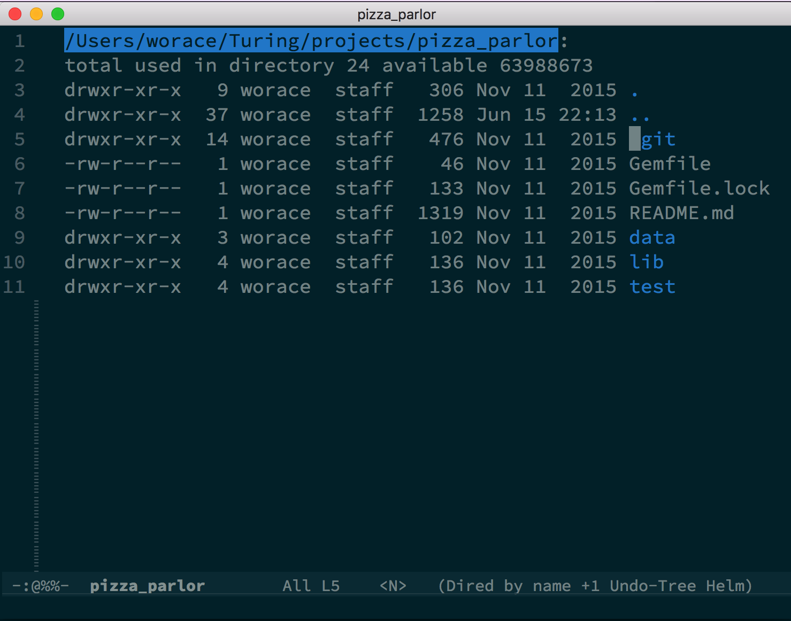
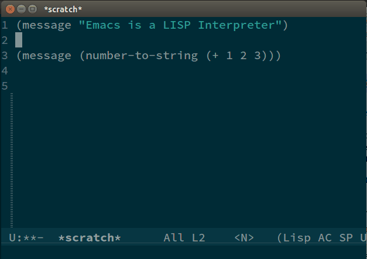
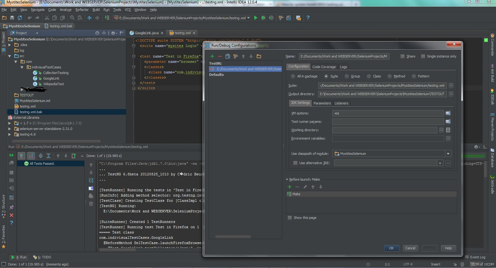
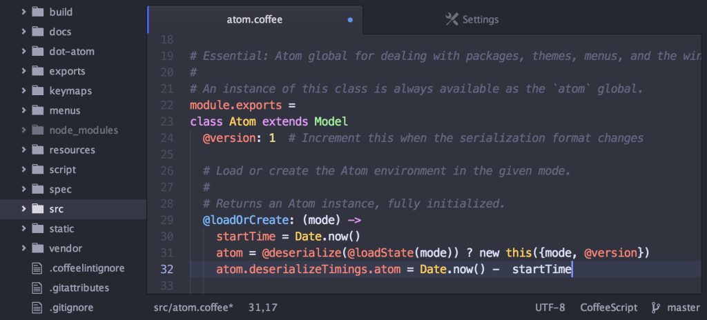
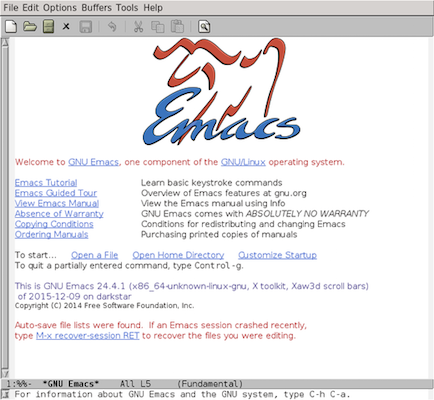
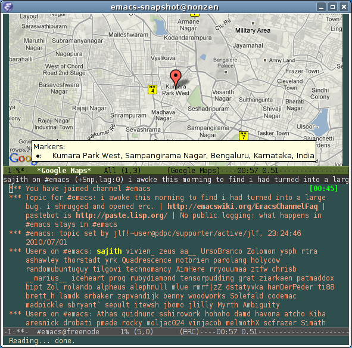
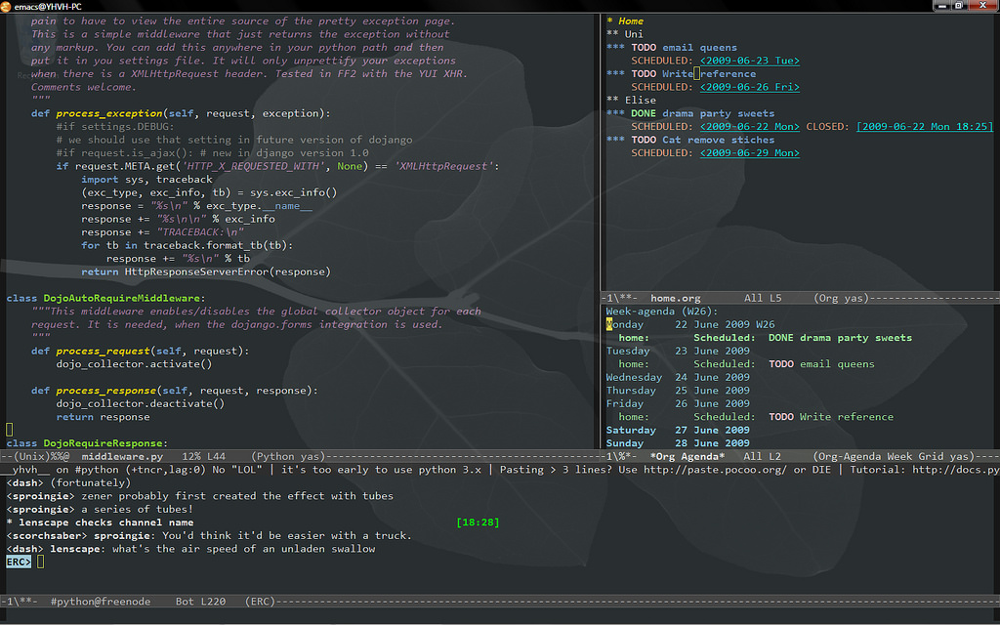
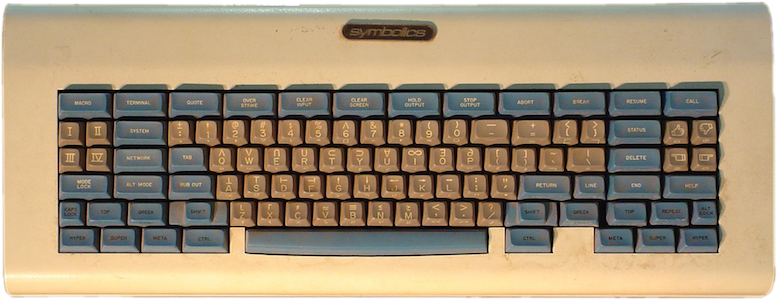

Intro to Emacs
Table of Contents
- 1. So what even is Emacs?
- 2. Emacs - Text Editor
- 3. Text - Source Code
- 4. Text - Other Text-y Stuff
- 5. Text - Emacs Tools (dired)
- 6. Emacs - Lisp Interpreter
- 7. Emacs Lisp – The Language of Emacs
- 8. Did we mention stupidly programmable?
- 9. Emacs - Minimal History
- 10. Emacs - The Creator
- 11. Emacs - Why would I use it?
- 12. Editor "Families" – IDEs
- 13. Editor "Families" – GUI Editors
- 14. Editor "Families" – Dinosaurs
- 15. Emacs can be many things…
- 16. Emacs can be many things…
- 17. Emacs can be many things…
- 18. Emacs - Why would I use it?
- 19. What is Emacs Especially Good At?
- 20. Emacs - Why would I NOT use it?
- 21. Emacs Cultural Heritage
- 22. Emacs Cultural Heritage
- 23. Using Emacs
- 24. Using Emacs - Installation
- 25. Using Emacs - Configuration
- 26. Using Emacs - Keybindings
- 27. Reading Emacs Keybindings
- 28. Using Emacs – Modes
- 29. Getting Help in Emacs
- 30. Other Starting Points
- 31. Let's Make an Emacs Configuration!
- 32. Workshop: Independent Emacs Config Walkthrough
- 33. Emacs essential keybindings
- 34. Testimonials - Neal Stephenson
- 35. Testimonials - Steve Yegge
1 So what even is Emacs?
1.1 A text editor!
1.2 A Lisp Interpreter!
1.3 A state of being!
2 Emacs - Text Editor
- Emacs provides a very flexible (and stupidly configurable) system for working with good old ASCII/Unicode Text
- Can mean source code (obviously popular with programmers)
- Also works great for markup formats (Org mode, Markdown, LaTeX)
- Text-based interactive interfaces (Shells, REPLs)
- Intermediate text-based UIs (dired, helm, etc)
3 Text - Source Code

4 Text - Other Text-y Stuff

5 Text - Emacs Tools (dired)

6 Emacs - Lisp Interpreter
Technically, Emacs itself is one big shambling Lisp interpreter:

7 Emacs Lisp – The Language of Emacs
(defun insert-p-tag () "Insert <p></p> at cursor point." (interactive) (insert "<p></p>") (backward-char 4))
Emacs is written and configured in Emacs Lisp, its own dialect of Lisp.
ELisp itself is in some sense 2 things:
- A Lisp dialect with some similarities to Common Lisp or Scheme
- A library of functions for manipulating the content of Emacs buffers
- (advance the point one character, insert some text here, cut some text to the clipboard, etc etc.)
8 Did we mention stupidly programmable?
- IRC / Chat Clients - https://www.emacswiki.org/emacs/InternetRelayChat
- Games -
M-x tetris - Web Browsers - https://www.emacswiki.org/emacs/CategoryWebBrowser
- Its own shell… - eshell
- FTP and SSH Clients - tramp-mode
- Literate Progarmming - org-babel
Emacs is a great operating system in need of a good text editor…
(har har har)
9 Emacs - Minimal History
- Emacs -> "Editor MACroS"
- Started in the early 1970's as a collection of more-or-less complex scripts for the terminal-based text editors at the MIT AI Lab
- 1976 - Stallman assembled these into the first version of what we would probably call Emacs now
- 1978 - First User Manual
- 1984 - Stallman starts working on GNU Emacs; v1 released 1985
- Current Version: 24.5
- jwz's Emacs Timeline
10 Emacs - The Creator
- Sometimes controversial
- 2015 - New maintainer for Emacs
- Good sign for continuity and succession in the community
11 Emacs - Why would I use it?
11.1 Text Editors: Sophisticated, (Easily) Customizable, Standardized – Pick 2
11.2 Let's look at the lay of the land in text editors…
12 Editor "Families" – IDEs

- Eclipse / IntelliJ / XCode / etc
- Focus on featureset and large codebases
- Wants to be your "1 tool" - VCS, Code Editing, Dependency management, Release Packaging, etc
- Slow and heavy but very sophisticated
13 Editor "Families" – GUI Editors

- Textmate / Sublime Text / Atom / VS Code / etc
- Popular for web tech / dynamic languages (less benefit from static analyis tools of an IDE)
- Lightweight, usually pretty fast (well, except for Atom…)
- Decent package ecosystems, especially within "mainstream" languages
14 Editor "Families" – Dinosaurs

- Emacs and Vim – Somehow still kicking
- Open Source, community-driven
- Unrivaled customizeability and package ecosystems
15 Emacs can be many things…
16 Emacs can be many things…

17 Emacs can be many things…

18 Emacs - Why would I use it?
18.1 What is it good at?
- Combining a "suite" of related tools to build a perfect environment for whatever your task at hand may be
- Working in a lot of different languages and environments
- Managing and interacting with long-running sub-processes: REPLs, IRB, Pry, Cider (Clojure REPL)
18.2 Use it if…
- You care about the feedback you get when editing code
- You like tinkering with stuff
18.3 These are your tools
- You are using them all day, every day, to make your living
- You should have the control to customize and tweak them as you see fit
19 What is Emacs Especially Good At?
20 Emacs - Why would I NOT use it?
- You want something that works "out of the box"
- You want something that behaves like a normal "App" on your OS (keybindings, GUI chrome, etc)

21 Emacs Cultural Heritage

22 Emacs Cultural Heritage
Lisp doesn't look any deader than usual to me.
- David Thornley
- "Quality without a name"
- Rooted in Hacker / Lisp cultural heritage
- Good things were, in fact, made before 2005
- Especially if you're a junior-ish developer who started in the last several years, Emacs can be a good gateway into learning about the history of open source technology and of other software tools
23 Using Emacs
23.1 Enough of the chitchat, let's use it!
24 Using Emacs - Installation
24.1 OS X – Homebrew
brew update && brew install emacs --with-cocoa brew linkapps emacs
24.2 Linux – Building from Source
cd ~/Downloads wget ftp://ftp.gnu.org/pub/gnu/emacs/emacs-24.5.tar.gz tar -zxvf emacs-24.5.tar.gz cd emacs-24.5 ./configure sudo make install
25 Using Emacs - Configuration
- Out of the box, Emacs is functional but crude
- Assembling your first Emacs configuration is a right of passage in some circles
- Can get endlessly complex with it
- https://writequit.org/org/#orgheadline39
- Can also get a lot done pretty simply
- Configuring Emacs could be that nerdy hobby you've been looking for
~/.emacs.d- Default directory where Emacs will look for your configuration~/.emacs.d/init.el- Default "init" file
26 Using Emacs - Keybindings

- Can be one of the steepest parts of the learning curve
- Many of the standard OS keybindings you're used to won't always work
- Fortunately you know some of them already
- shell text navigation commands (end of line, beginning of line, etc) actually come from Emacs
- We'll also pass out cheatsheets of the most common keybindings
- https://www.gnu.org/software/emacs/refcards/pdf/refcard.pdf
27 Reading Emacs Keybindings

C-ControlM-Meta (Alt/Option)S-ShiftC-nHold control and press "n" (note there is no space between the 2)C-x C-bHold control and press "x", then release both keys then hold control and press "b"C-x bHold control and press "x", then release both and press "b"
28 Using Emacs – Modes
- A "Mode" represents a collection of related functionality in Emacs
- At any time you can have 1 Major Mode active
- Major modes often define features for a given file type – Ruby mode, HTML mode, etc
- Can also have any number of Minor Modes – these usually provide more general functionality
- For example "linum-mode" is a simple Minor Mode for displaying line numbers in a file
29 Getting Help in Emacs
C-h a- "Apropos" help – Type in a string and get a list of matching emacs commandsC-h k- Keybinding help – Emacs will prompt you for a key and then describe what it doesC-h m- "Mode" help – list all the currently active modes so you can get more info on themC-h t- Emacs Tutorial - Built-in Emacs walkthrough that introduces common keybindings and concepts – do it!
30 Other Starting Points
- Prelude - https://github.com/bbatsov/prelude – Probably most popular "starter kit"
- Spacemacs - http://spacemacs.org/ – pre-configured distribution centered around evil mode
- Good: Look pretty and have lots of cool stuff out of the box
- Bad: No idea what is going on
- Recommendation: play around with them on your own to get ideas for different tools you might like to bring into your own configuration
31 Let's Make an Emacs Configuration!
What are the essential things we would need to edit code productively in Emacs?
- Not look like garbage
- Basic syntax highlighting
- Find Files, Search text in a project
- Run Tests
- Run a REPL
- I got you dog: http://worace.works/2016/06/07/getting-started-with-emacs-for-ruby/
32 Workshop: Independent Emacs Config Walkthrough
32.1 Option A: Emacs Setup Tutorial
If you're ready to dive into configuring your very own emacs setup, get started by working through the tutorial here: http://worace.works/2016/06/07/getting-started-with-emacs-for-ruby/
32.2 Option B: Emacs Built-in Help Tutorial
If you'd like to spend some more time learning about the basic concepts and controls of Emacs, take some time to work through the guided tutorial built in to Emacs itself. Remember, you can activate the tutorial at any time with C-h t. Once you're in the tutorial, you can exit with C-x k
33 Emacs essential keybindings
33.1 Text Navigation
- forward word
- backward word
- forward line
- backward line
- end of line
- beginning of line
- end of buffer
- beginning of buffer
33.2 Working with Files and Buffers
- open new file
- save file
- select buffer
- kill buffer
- browse directory
33.3 Undo/Redo
33.4 Managing Panes
- open new horizontal split
- open new vertical split
- close current split
- close all other splits
- cycle between splits
33.5 Running Emacs Commands
M-x
34 Testimonials - Neal Stephenson
I use emacs, which might be thought of as a thermonuclear word processor. (…) It is colossal, and yet it only edits straight ASCII text files, which is to say, no fonts, no boldface, no underlining. In other words, the engineer-hours that, in the case of Microsoft Word, were devoted to features like mail merge, and the ability to embed feature-length motion pictures in corporate memoranda, were, in the case of emacs, focused with maniacal intensity on the deceptively simple-seeming problem of editing text.
- Neal Stephenson
35 Testimonials - Steve Yegge
Real engineers use Emacs. You have to be way smart to use it well, and it makes you incredibly powerful if you can master it. It's a real eye-opener for someone who's used Visual Blub .NET-like IDEs their whole career.
Emacs is the 100-year editor.
It's more than just a productivity boost from having great typing shortcuts and text-editing features found nowhere else on the planet. (…) Emacs has the Quality Without a Name.
- Steve Yegge